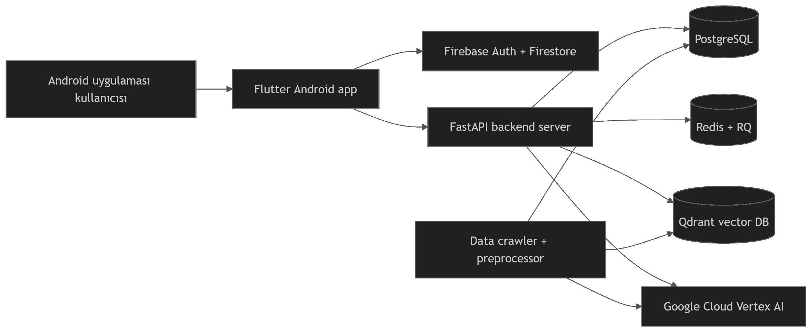

Decorator AI
Kullanıcıların oda fotoğrafı üzerinden kişiselleştirilmiş iç mimari tasarım önerileri almasını sağlayan AI destekli bir mobil uygulamadır. Sistem, girilen tercihlere uygun oda tasarımları üretir ve katalogdaki gerçek mobilya ürünleriyle eşleştirerek sunar.
Google Drive APK İndirme Bağlantısı
1. Proje Özeti
Sistem yalnızca yapay zeka ile hayali bir görsel üretmekle kalmaz; toplanan gerçek mobilya katalog verilerini işler, semantik vektör araması ile eşleştirir, yerleşim planını kurgular ve kullanıcıya uygulanabilir, satın alınabilir ürün önerileri içeren hotspot'lu bir tasarım çıktısı sunar.
Katalog Verisi
Scrapy crawler'ları ile kaynak mağazalardan (IKEA, Vivense vb.) gerçek ürün ve görsel verileri toplanır.
Agentic RAG
Vertex AI ve LangGraph entegrasyonu ile multimodal oda analizi ve akıllı ürün yerleşimi yapılır.
Hızlı Retrieval
PostgreSQL kalıcı kaynak veriyi, Qdrant ise text/image embedding'leri üzerinden semantik aramayı üstlenir.
Etkileşimli UI
Flutter ile geliştirilen arayüz; oda tarama, hotspot detayları ve favori yönetim akışlarını içerir.
2. Sistem Mimarisi

Proje Yapısı ve Katmanlar
flutter-app/: Flutter ile geliştirilmiş, Material 3 tabanlı Android uygulaması.ai-service/: FastAPI mimarisinde backend API, iş kuyruğu ve LangGraph workflow katmanı.data/: Ürün crawler düzenekleri, normalizasyon ve yapay zeka zenginleştirme (enrichment) hattı.Firebase: Client tarafı yetkilendirme (Auth) ve Firestore bulut veri yönetimi.
Kritik Tasarım Kararı
Oda fotoğrafı, yapay zeka tarafından doğrudan bir stil transfer kaynağı olarak değil, boş bir mimari kabuk referansı olarak işlenir. Önerilen tüm mobilyalar, sisteme önceden dahil edilmiş olan gerçek ürün veri setinden (canonical database) RAG filtrelemesiyle seçilerek yerleştirilir.
3. Uçtan Uca Çalışma Akışı
design job tetiklenir.4. Data Pipeline: Crawler ve Preprocessor
4.1 Crawler Operasyonu
data/ klasöründe yer alan Scrapy altyapısı, hedef mağazaların web sitelerinden ürün adı, fiyat, açıklama ve görsellerini kontratlı bir veri yapısında toplar.
| Modül / Bileşen | Pratik Görevi |
|---|---|
FurnitureItem | Ürün URL'i, ad, fiyat ve görsel yolları için veri sözleşmesini tanımlar. |
DuplicatesPipeline | Mükerrer veya geçersiz kaynak kayıtları veri setine girmeden ayıklar. |
FurnitureImagePipeline | Görselleri asenkron indirir ve local disk yollarını item metadatasına işler. |
JsonExportPipeline | İşlenen temiz veriyi satır bazlı data/output/products.jsonl olarak kaydeder. |
Örnek aktif spider'lar: vivense_spider.py, ikea_spider.py, istikbal_spider.py.
Crawler'ı manuel tetiklemek için:
python scraping.py --spider vivense --target-per-category 50
python crawler/run_all.py4.2 Preprocessor ve Enrichment
Toplanan verileri normalize etmek ve Vertex Gemini aracılığıyla zenginleştirmek için aşağıdaki komut yürütülür. Cloud kimlik bilgileri doğrulanmadıysa deterministik fallback kuralları devreye girer.
python preprocessor/run.py \
--input output/products.jsonl \
--output preprocessor/enriched_products.jsonl \
--parallel-requests 45. AI Service Backend & Agentic Pipeline
FastAPI sunucusu, mobil istemciden gelen istekleri karşılayıp veri tabanı süreçlerini yürütürken ağır yapay zeka görevlerini Redis ve RQ worker katmanına devreder.
5.1 Agentic AI Pipeline Adımları
Her bir tasarım işi (design job), LangGraph üzerinde yapılandırılmış şu sıralı iş akışını (Node) takip eder:
1. validate_input → Kullanıcı istek ve parametre doğrulaması yapar.
2. analyze_room → Yüklenen oda fotoğrafının mimari kabuğunu analiz eder.
3. create_design_strategies → Kullanıcı brief'ine göre tasarım stratejisi belirler.
4. retrieve_candidates → Qdrant ve PostgreSQL kullanarak RAG ile uygun mobilyaları getirir.
5. rerank_products → Getirilen aday ürünleri stile göre yeniden sıralar.
6. plan_placements → Mobilyaların yerleşim planını ve koordinatlarını hesaplar.
7. generate_images → Nihai oda görsellerini üretir veya overlay bileşenleri oluşturur.
8. validate_result → Üretilen çıktının kalitesini ve doğruluğunu kontrol eder.
9. persist_result → Sonuçları veritabanına kalıcı olarak işler.5.2 Backend Servis Yapısı
| Servis Tanımı | Kullanılan Teknoloji ve Varsayılan Port Bilgisi |
|---|---|
api | FastAPI uygulama katmanı, http://localhost:8000 portunda çalışır. |
worker | Python RQ Worker yapısı; arka plan yapay zeka görevlerini asenkron tüketir. |
postgres | Canonical ürün katalog verisi, kullanıcı job durumları ve lokasyon kayıtları. |
redis | Job Queue (İş Kuyruğu), state takibi ve önbellekleme (caching) yönetimi. |
qdrant | Vektör veri tabanı; semantik multimodal ve metin aramaları için RAG motoru. |
6. Rendering, Layout ve AI Görsel Üretimi
Sistem, GPU gerektiren maliyetli süreçleri optimize etmek amacıyla esnek bir rendering ve layout katmanı sunar:
- Akıllı Düzenleme (Smart Layout): Büyük hacimli ana mobilyalar (anchor-first) öncelikli yerleştirilir. Sehpa-koltuk, komodin-yatak gibi hiyerarşik ilişki kuralları ve çarpışma algoritmaları işletilerek yerleşim skoru hesaplanır. Minimalist, cozy veya dengeli varyasyonlar üretilebilir.
- Renderer Stratejileri:
overlay: Varsayılan moddur, GPU gerektirmeden katmanlı görsel kompozisyonu oluşturur.mock_inpaint: Maske ve prompt şemalarını hazırlar, ardından overlay motoruyla birleştirir.sdxl_inpaintveexternal_ai: Gelecekte gerçek GPU tabanlı inpainting sağlayıcıları (Replicate, Stability, HuggingFace vb.) entegrasyonu için ayrılmış soyut mimari altyapıdır.
7. Flutter Mobil Uygulaması
Uygulama, Android platformu öncelikli olacak şekilde Material 3 tasarım diliyle geliştirilmiştir. Kullanıcı profil ayarlarından veya build aşamasından dinamik backend URL tanımı yapabilmektedir.
Pratik Derleme ve Çalıştırma Komutları
Uygulamayı yerel cihazlarda veya emülatörde doğru servis adresiyle ayağa kaldırmak için --dart-define flag'leri kullanılır:
# Bağımlılıkları çekme ve dil dosyalarını üretme
flutter pub get
flutter gen-l10n
# Android Emulator üzerinde yerel backend ile çalıştırma
flutter run --dart-define=BACKEND_BASE_URL=http://10.0.2.2:8000
# Web, Desktop veya iOS Simulator üzerinde çalıştırma
flutter run --dart-define=BACKEND_BASE_URL=http://localhost:8000
# Gerçek bir uzak sunucu/IP adresi vererek çalıştırma
flutter run --dart-define=BACKEND_BASE_URL=https://backend-sunucu-adresiniz.com
# Üretim (Production) ortamı için APK çıktısı alma
flutter build apk --dart-define=BACKEND_BASE_URL=https://backend-sunucu-adresiniz.com8. Firebase ve Cloud Katmanı
Gizli kimlik bilgileri, API anahtarları, prompt şablonları ve faturalandırma gerektiren AI mantıksal kararları güvenlik nedeniyle istemcide değil, tamamen server (backend) tarafında barındırılır. Firebase ise şu mobil servisleri yönetir:
- Firebase Auth: Standart kullanıcı girişleri ve anonim (guest user) oturum akışları. Anonim girişler, misafir kullanıcıların oluşturdukları tasarımları kaybetmeden cihazlarında saklamalarını sağlar.
- Firestore DB: Uygulama arayüzünde sergilenen hazır küratörlü (curated) tasarımlar, kullanıcıların kaydettiği projeler, favori ürün listeleri ve hotspot koordinat verileri.
- Bildirim Yönetimi: Cihaz içi anlık olaylar için
Flutter Local Notifications; sunucu tetiklemeli asenkron durum güncellemeleri içinFirebase Messaging (FCM)altyapısı kullanılır.
9. Sıfırdan Kurulum Adımları
9.1 Ön Gereksinimler
Sisteminizde Git, Docker, Docker Compose v2+, Python 3.11+, Flutter SDK ve Firebase CLI araçlarının hazır bulunması gerekmektedir. Ayrıca Google Cloud üzerinde Vertex AI servislerinin açık olması ve bir Service Account JSON anahtarının temini şarttır.
9.2 Projeyi Çekme ve DataPipeline Hazırlığı
git clone https://github.com/ElifSeden/VisionSpace.git decorator-ai
cd decorator-ai
# Veri hattı sanal ortam kurulumu
cd data
python3 -m venv .venv
source .venv/bin/activate
pip install -r requirements.txtLokalde secrets/ klasörü oluşturup Google service account JSON dosyanızı buraya yerleştirin ve .env dosyanızı yapılandırın.
9.3 Backend Servislerini Ayağa Kaldırma
cd ../ai-service
cp .env.example .env
# .env içerisindeki DB, Redis, Qdrant ve GCP path değerlerini düzenleyin.
# Docker konteynerlerini kurma ve başlatma
make setup9.4 Veriyi İçeri Aktarma ve Semantik Indexing
Zenginleştirilmiş ürün veritabanını PostgreSQL'e basmak ve Qdrant üzerinde vektör indekslerini hazırlamak için:
make import-enriched
make index-products9.5 Servis Doğrulama (Health Check)
curl http://localhost:8000/health
# Beklenen çıktı: {"status":"ok"}API dokümantasyon arayüzlerine http://localhost:8000/docs adresinden erişebilirsiniz.
10. Test ve Doğrulama Protokolü
| Hedef Katman | Çalıştırılacak Pratik Komut | Doğrulama Kapsamı |
|---|---|---|
| Flutter UI | flutter analyzeflutter test | Dart kod kalitesi, sözdizimi doğruluğu ve widget birim testleri. |
| Backend & AI | pytestdocker compose run --rm api pytest | FastAPI endpoint fonksiyonları, DB bağlantı testleri ve workflow logic. |
| Veri Toplama | python scraping.py --spider ikea --target-per-category 5 | Örnek veri çekme hattı, Scrapy pipeline çıktılarının kontrolü. |
11. Operasyon Komutları Kılavuzu
Backend (Makefile Kısayolları)
cd ai-service
make setup # Docker'ı sıfırdan kurar ve ayağa kaldırır
make up # Servisleri arka planda başlatır
make down # Konteynerleri durdurur
make logs # Canlı log takibi yapar
make migrate # DB şema göçlerini tetikler
make create-qdrant # Qdrant collection şemasını açar
make import-enriched # JSONL verisini PostgreSQL'e basar
make index-products # Vektörleştirme sürecini başlatır
make worker # RQ worker'ı aktif ederFrontend & Cloud Dağıtım
cd flutter-app
flutter pub get # Paketleri çeker
flutter gen-l10n # Dil şablonlarını yeniler
flutter analyze # Statik kod analizi yapar
flutter test # Testleri koşturur
firebase deploy --only firestore # Kuralları buluta basar12. Notlar ve Kısıtlar
- Kapsam Sınırı: Sistem şu anki model ve kurallar dahilinde yalnızca salon ve mutfak iç mekan tasarımlarını ve bu odalara ait mobilya tipolojilerini desteklemektedir.
- Deterministik Olmayan Çıktılar: LLM ve multimodal analiz süreçleri yapısı gereği tamamen deterministik değildir; aynı fotoğraf ve brief girdilerinde bile model parametrelerine bağlı olarak yerleşim kombinasyonları esneklik gösterebilir.
- Dataset Optimizasyonu: Katalog ürün veri seti, jüri demoları ve test süreçlerinde Vertex AI API / embedding token maliyetlerini kontrol altında tutmak ve bütçeyi optimize etmek amacıyla bilinçli olarak limitli ölçekte yapılandırılmıştır.